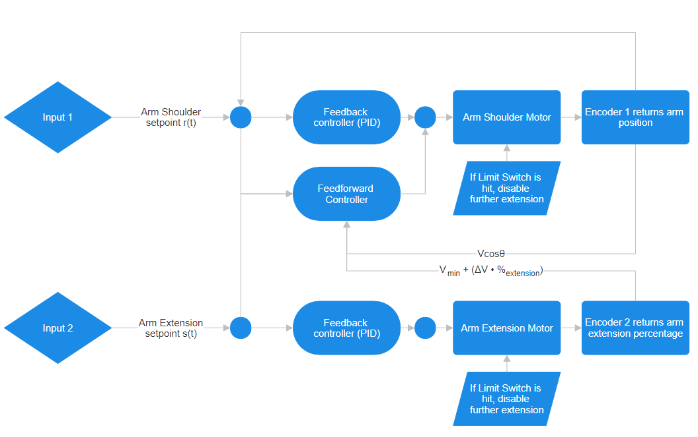

First Robotics Competition 2023
The 2023 FRC game involved
picking up cones and cubes, and scoring them into goals of varying heights.See the code!
Subsystems:


Arm Shoulder:
Arm Extension

Arm control method:
Our main objective with the arm was to allow precise control such that the operator could press one of four buttons and raise the arm to one of four setpoints
Such a system would have to account for properties such as gravity, inertia of the system, internal friction, and centre of mass. To achieve this, the arm was controlled with a combined feedforward/feedback control loop
- To counteract gravity and internal friction, we found v, a minimum voltage to keep the arm horizontally raised. This meant that a base voltage vcosθ was applied at all times
- To account for the changing centre of mass due to the arm extending in and out, we found this minimum voltage value at the minimum and maximum extension and scaled this value linearly based on the extension percentage read
- The feedback loop was a PID loop and used the position, integral, and derivative of the error term to get the arm to a desired setpoint
Arm control method logic diagram:
Wiring diagram:
The grey "RoboRio" acted as the main processor for the robot where the CAN bus (green & yellow) started and terminated. All components were powered through the PDP (red & black). The radio was used to connect to the laptop & controllers. We had additional components such as rotary encoders, limit switches, and an IMU